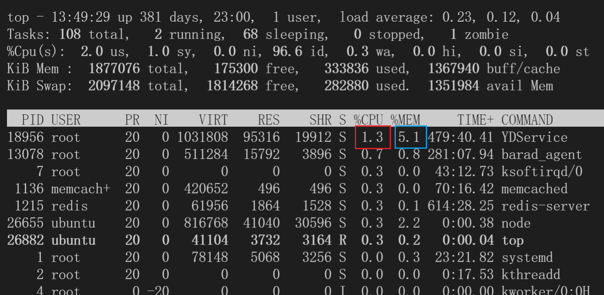

这里主要介绍服务端架构工作中的一些常见的概念和指标，在我们部署、上线等运维工作时，方便排查问题，以及交流时的语义一致。
上游和下游 upstream and downstream
一般在谈论服务和调用关系的时候，我们会使用上游和下游来表示服务间的相关依赖。但是对于上下游的定义，会视情况而定的。
Stack Overflow上有个相同的问题：definition - Upstream / downstream terminology used backwards? (E.g. nginx) - Stack Overflow
以下是点赞最多的回答的节选：
Formal definition was added later, in RFC 2616:
upstream/downstream
Upstream and downstream describe the flow of a message: all messages flow from upstream to downstream.
According to this definition:
- if you are looking at a request, then the client is upstream, and the server is downstream;
- in contrast, if you are looking at a response, then the client is downstream, and the server is upstream.
中文意思是：
- 如果是从请求的角度去看，那么客户端是服务端的上游，服务端是客户端的下游；
- 如果是从返回数据的角度来看，那么数据是从服务端返回给了客户端，因此服务端是客户端的上游，客户端是服务端的下游。
在本文中，我们强调的是服务之间的调用关系，因此是以“请求”的角度来看到，即按照客户端为上游，服务端为下游的说法。
另外，在讨论A服务将数据写入一个消息队列，B服务消费消息队列的信息的这种情况，我们是按照数据的流向来定义上下游，此时，A为上游，B为下游。
扇入和扇出 fan-in and fan-out
扇入/扇出，在百度百科中有比较好的定义：扇出能力_百度百科 (baidu.com)
在软件设计中，扇入和扇出的概念是指应用程序模块之间的层次调用情况。
按照结构化设计方法，一个应用程序是由多个功能相对独立的模块所组成。
扇入：是指直接调用该模块的上级模块的个数。扇入大表示模块的复用程度高。
扇出：是指该模块直接调用的下级模块的个数。扇出大表示模块的复杂度高，需要控制和协调过多的下级模块；但扇出过小（例如总是1）也不好。扇出过大一般是因为缺乏中间层次，应该适当增加中间层次的模块。扇出太小时可以把下级模块进一步分解成若干个子功能模块，或者合并到它的上级模块中去。
服务性能指标
在观察一个服务时，我们可以从多种角度去判定。
CPU负载 & 内存占用
如果服务的响应变慢，延时增高，我们优先需要查看机器的负载情况。
这两个比较简单，使用常用的top命令就可以看到。另外使用top -H可以看到线程级别的占用。以下是top的结果。

这里红色的框表示这个进程的CPU的占用，这个数字表示占用了多少CPU核。在4核的机器上，单个进程的占用可以达到300%+。
蓝色的框表示内存占用，这里是该进程对整个机器的内存的占用情况。
顺便介绍一下每一列的含义：
PID: 进程编号USER: 启动该进程的用户名PR: 进程优先级NI: nice值，越低表示优先级越高VIRT: virtual memory，进程使用的虚拟内存总量，单位：kb。VIRT=SWAP+RESRES: 进程使用的、未被换出的物理内存大小，单位：kb。RES=CODE+DATASHR: 共享内存大小，单位：kbS进程状态D: 不可中断的睡眠状态R: 运行S: 睡眠T: 跟踪 / 停止Z: 僵尸进程
%CPU: 上次更新到现在的 CPU 时间占用百分比，100%表示用满单核的资源，4核机器理论上限400%%MEM: 内存占用百分比TIME+: 进程使用的 CPU 时间总计，精确到 1/100 秒COMMAND: 命令名 / 命令行
接下来介绍一下我遇见过的一些案例：
- 服务升级后，延时稳定上涨2ms
这种情况下，一般先对比上线前后的CPU占用，发现新版服务的CPU占用上涨（一般服务都有自己的状态看板）。之后查看服务更新的代码，确定是有新增的功能。
此时，需要评估新增功能对资源的消耗是否符合预期。不符合，则考虑回滚，符合则保持。
- 服务重启，延时上涨，一段时间后恢复
这种情况，一般是服务自身内存有Cache数据，服务重启之后所有的Cache情况，此时对于所有的请求，都必须重新请求一次下游。数据的获取和解析需要额外的时间和CPU，以及内存的申请，因此延时上涨。一段时间后，Cache的命中率和重启前一致，延时正常。
这里需要注意的是，服务的Cache清空，导致对下游的请求里一次性增大，有可能会造成下游的雪崩问题。因此一方面下游需要做好应对策略，另一方面，上游的服务也尽量保持小粒度的滚动升级，不要一次性全部升级。
带宽
这篇文章有比较详细的介绍：[656]linux查看服务器带宽_周小董-CSDN博客_linux 查看带宽
通过nload工具（机器不存在的话，可以apt install安装）可以比较方便的查看网卡的流入流出的流量。
一般对于存放数据的服务，流量大的时候会存在带宽打满的情况。此时服务的CPU可能负载并不高，但是上游的延时或者错误率上涨。这里的带宽包括了单机、交换机等的带宽。
这里我也见过几次带宽导致的问题。
主要的现象是，客户端的调用时间远大于服务端的内部时间。这基本上可以认为是网络传输的问题。有两种可能：
- 带宽打满。这种情况只能找运维了。
- 跨机房。一般为了优化服务调用，会在一个机房部署整套的相关服务，这里RPC调用会优先在同机房内进行。在容灾或者其他场景下，有可能有跨机房的需求，这样延时势必会上涨。
接口指标
QPS/TPS
- QPS (Queries Per Second)，每秒查询率。表示服务每秒能够相应的查询次数，是对一个特定的查询服务器在规定时间内所处理流量多少的衡量标准。
- TPS（Transactions Per Second），事务数/秒。它是软件测试结果的测量单位。一个事务是指一个客户机向服务器发送请求然后服务器做出反应的过程。客户机在发送请求时开始计时，收到服务器响应后结束计时，以此来计算使用的时间和完成的事务个数。
上面的概念是照搬的其他的博客的说法。我在日常工作中，基本上没有遇到过TPS的概念。
对于QPS，由于每个服务都是以集群的方式部署，所以QPS分为整体QPS和单机QPS。我们可以粗略的认为整体QPS=单机QPS x 机器数。但实际上，由于一致性Hash等策略，每台机器的负载可能不均，这是一些问题排查的干扰项，我们在后续的一致性Hash和Shard的章节具体介绍。
并发数
并发数，系统同时能够处理的请求/事务数量。注意，这里只是处理，并不是处理完。
响应时间 & Latency
响应时间即完成一次事务所需要的时间。一般从AVG、PCT90、PCT95、PCT99（PCT99可以简称P99）等多个维度去看。有时候也叫Latency。
需要注意的是，时延有服务端和客户端两个视角。一般可以理解: 客户端时延 = 服务端时延 + 网络时延。
- AVG: Average，表示平均Latency
- PCT90: 将延时由小到大排列，90%的位置的时延。即90%的请求可以在XXX时间内得到响应
- PCT99: 99%的请求可以在XXX时间内得到响应
一般其实我其实主要看AVG和PCT99两个指标。一般新上线功能的时候，AVG和P99不应该有大的变化。如果有，则需要分析是否符合预期。
在线上如果出现报警，也可以观察这两个指标。
客户端时延 > 服务端时延
网络传输需要时间，所以肯定有差异。如果差异较大，考虑是否是数据量太大、带宽不足或跨机房。
客户端时延 ＜ 服务端时延
客户端设置了超时，提前结束的响应。而服务端继续执行。浪费算力。
AVG变化小 PCT99变化小
正常状态。也可以和历史的时延对照来看。
AVG变化小 PCT99变化大
这种情况，一般是单机/小集群的问题。1%的机器的延时上涨就会影响P99的变化，但对AVG影响较小。
因此可能是小流量的实验或者机器故障。
AVG变化大 PCT99变化小
这种有点反直觉。 一种可能是本身服务超时严重，pct99就等于设置的超时时间。 或者服务端拒绝响应，被拒绝的请求的延时就基本上等于0。而观察的时候没有区分是成功或是失败的响应，就可能出现这种现象。
AVG变化大 PCT99变化大
全量服务变更或者故障，建议高优排查。
错误率 & 状态码
顾名思义，表示请求错误的比例。这里的错误有两种: 框架错误和业务错误。
- 框架错误，包括服务故障或压力导致的无法访问。例如连接超时、服务地址不存在、rpc method没对齐等错误。
- 业务错误，服务本身状态良好，但由于请求缺少相关字段，或者服务的下游故障等，导致该服务无法获取到正确结果。这时，需要服务返回业务的状态码。
一般框架协议会提供一套错误码机制，比如http的状态码，200表示success等。 同时在框架状态码为success时，接口一般会返回业务状态码，表示业务的执行情况。比如“用户未登录”、“token无效”、“success”等。 通过精细化状态码的含义，可以有效的协助我们有区分性地排查架构和业务问题。
日志、打点、埋点
日志
一般就是我们程序运行输出的文本信息。最简单的日志系统就是把日志文件存在在服务所在的机器上。需要排查问题的时候登录到对应的机器，查看日志文件。 常见的有很多日志库，spdlog，log4cpp等。在写本文的时候，刚好爆出了log4j这个日志库的命令注入的bug。
一般一条日志就是一行文本。包含了日期，级别，日志所在文件和行号，具体信息等。可以通过配置来定制。日志级别常见的有Error, Warning, Info, Debug, Trace等。 也有公司会将日志写入ElasticSearch等引擎，便于问题排查和回溯。
打点
打点也是日志的一种，不同于常规日志的简单的记录功能。打点的数据会被汇总并做聚合分析，常见的打点类型有计数counter，记时timer和存值store。以及tag，便于按条件过滤。
- 计数可以统计qps等。
- 记时可以分析服务响应时间等，比如前面的pct99等指标。
- 存值一般就写入当前内存数，cpu使用数，缓存大小等，方便分析服务状态。
打点系统一般包括数据采集、聚合、查询、可视化等部分。 相关的开源工具有Prometheus，grafana等，这里我也了解不多。
埋点
埋点一般指网页或者客户端的打点日志。比如用户点击了一个视频，在某个新闻停留多长时间，下载了app，充值，点击购物车或者购买商品等。 客户端埋点数据会实时或者定时的上传。(部分数据可能需要广告主等回传) 一般一次完整的交互过程会有一个唯一的trace_id，每一个环节的日志都包含了trace_id。因此通过trace_id对服务端和客户端的日志进行关联，我们就可以还原出一次交互的完整生命周期。 公司可以利用这些数据做用户画像，训练模型，提供更个性化的服务。
更可怕的是，不同的公司会共享这部分数据。比如当在微信搜索某件商品后，打开京东，会给你推荐相关的产品。可见大数据无处不在。还好，相关的政策在不断的提出，相信信息滥用的情况会逐渐好转。
其他的概念
这里有一些服务相关的概念，我平时接触的也很少。仅记录一下。
降级-熔断-限流
关于降级，熔断，限流，知乎的这篇文章有比较好的介绍。降级-熔断-限流-傻傻分不清楚 - 知乎 (zhihu.com)
反压
这个概念主要出现在数据流的任务中。比如A服务将数据写入消息队列，B服务消费消息队列。如果B服务处理的过慢，会导致A服务必须降速或停止写入，否则消息队列会挤压大量的任务。 一般情况下B的处理效率会比A高的，因此消息队列一直很空。但当B出现GC，或者依赖的下游抖动时，B的处理效率可能会短时变差，从而对A造成反压，处理不当的话，会反压更上游的服务。
我见到的反压一般都是短时的，通过重启就可以较好的缓解。这里需要保障重启之后的数据状态可以恢复，或者丢弃的任务不影响整体的效果。 如果重启无效，还可以考虑上游做流量降级。甚至直接丢弃当前队列的数据。 故障是随时都会发生的，我们能做的无非是未雨绸缪和择祸从轻。
eBPF
eBPF是一种让内核可编程的技术。 https://zhuanlan.zhihu.com/p/182344856
比如实时监控主机的内存、CPU、带宽等功能均可以通过该技术来实现。
这里为什么专门记录一下呢，是因为之前有线上问题最终排查是主机上的一个eBPF程序里维护了一个低性能的map结构，占用大量CPU。因此有时候服务的性能并不完全由自己的硬件和程序决定。还存在不知道哪里来的第三方。
绑核
这个一般是指设置程序的CPU亲和度。
比如某些嵌入式设备存在不同规格的CPU，在测试性能时可能会出现多次测试的结果差异很大的情况，大概率是执行程序的核心差异导致的。一般使用 taskset 命令。
在服务部署也有类似的问题，目前使用k8s进行服务部署，单个物理机会同时部署多个实例。通过绑核的操作，可以使程序(尽量)在固定的CPU运行，这样在NUMA架构下会更加友好。
写在后面
本文介绍了许多我们谈论架构时常见的名词，以及比较简单的案例和分析。
由于概念的归类难以统一，因此本文的组织结构也并不严谨。每种专业术语的定义虽然也在网上查了下，仍会存在不准确的情况。 在我的日常工作，暂时还没有因为术语的不对齐而导致的误解，相信本文的介绍总体上还算正确，有问题请及时指正。
至此，本文就结束了。如果想到新的有意思的概念，我会继续在这里补充。
期待早日完成下一篇博客。